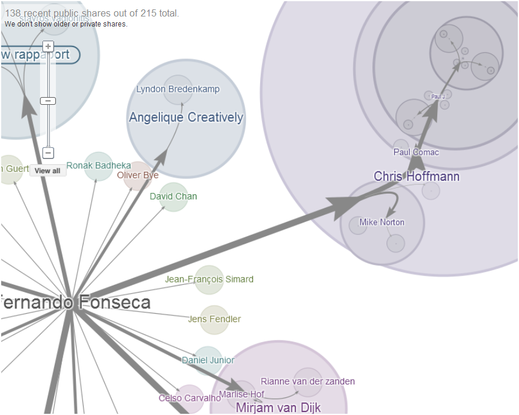

Google just announced Ripples,which allows Google+ users to visualize the spread of information across the network. Scott Weingart gets into some of the details here and references my G+ post on the matter, where I make two claims:
1) G+ is more of a generic network that seems to be designed to give its users progressively more network-oriented functionality for whatever they want to do, rather than a tool designed for sharing (information, photos, recipes) or making and maintaining contact with people. In other words, Twitter and Facebook are social tools that happen to be networks, while G+ is a network that happens to be used as a social tool. As Scott says, this is “a wishy-washy distinction, and not entirely true,” but I think that kernel of truth is something very exciting.
2) Google Ripples is the beginning of widespread public adoption of network representation as a useful and commonplace tool, on par with map representation for spatial data. This is also exciting, and tied to a hoped-for rise in network literacy that will further drive the adoption and increased importance of various tools, visual representation methods and research agendas.
Google Maps came out six years ago, and eventually lead to Google Earth and a set of spatial data standards and practices that, while not necessarily being everyone’s (or my) first choice for analysis and representation, has fostered such an amazing level of spatial literacy and participation. Community-driven spatial projects like Look Back Maps, Omnes Viae and iNaturalist are all driven by the Google Maps API but, more importantly, are made possible due to the absurdly high number of people who understand maps and spatial analysis in a manner that was previously only demonstrated by GIS professionals and cartographers.
If Google Ripples is more like Google Maps and less like Google Wave, then in a few years I won’t have to explain what a graph is, and simple network metrics like weighted in-degree, betweenness centrality and closeness will be as commonplace as polygons, markers and layers.